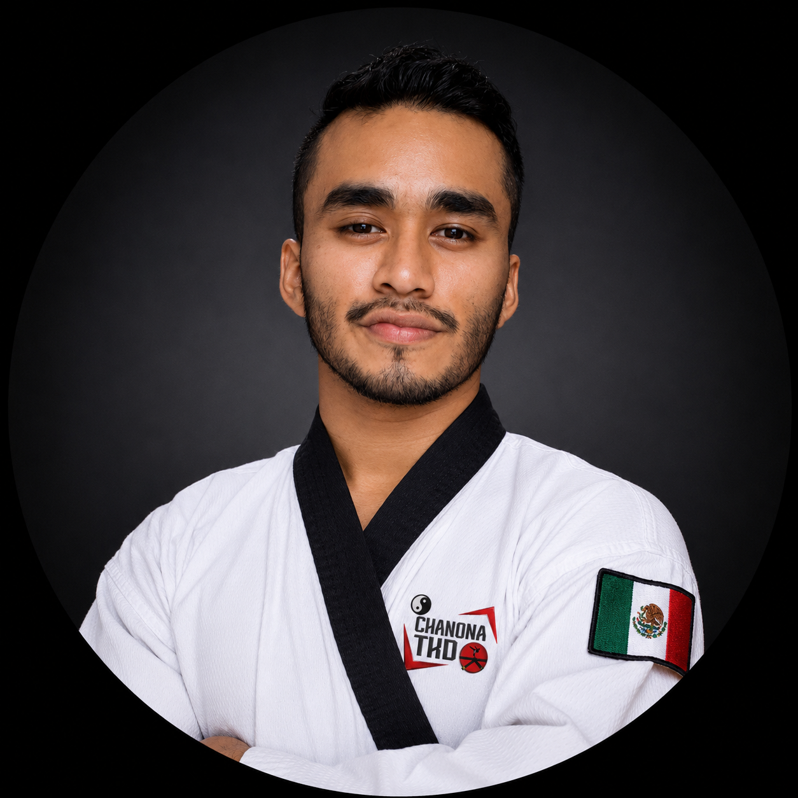

Competir me ayudó a comprender la importancia de desarrollar cada componente técnico con dirección.
FUNDADOR Y CREADOR DEL MÉTODO
Mtro. Bryan Herrera Chanona.
No fui el atleta al que todo le salía naturalmente. Por eso aprendí a hacer una pregunta que guía ChanonaTKD: ¿cómo construyo la capacidad para ejecutar mejor?

EXPERIENCIA APLICADA
De buscar explicaciones a construir un método.
En mi formación muchas veces escuché lo que estaba mal, pero no encontraba una ruta completa para desarrollar la fuerza, flexibilidad o control que necesitaba para corregirlo. Investigar, experimentar y conectar disciplinas aplicables al movimiento se convirtió en una parte fundamental de mi trabajo.
17 añosPracticando Taekwondo
10 añosEnseñando
6 añosEnseñanza online
3er DanCinta Negra · 2º Dan Kukkiwon
TRAYECTORIA COMPETITIVA
Experiencia para explicar, planificar y observar mejor.
Experiencia competitiva en distintos países, incluyendo Corea, Canadá y Costa Rica.
Reconocimiento obtenido en mi trayectoria como atleta.
Una de las distinciones que respaldan el camino recorrido.
Resultados en Belgrado y trabajo con alumnos en distintos países.
Alumnos preparados con el método han conseguido medallas en competencias nacionales.
ALCANCE INTERNACIONAL
Aprender y enseñar no tiene fronteras.
ChanonaTKD ha trabajado con practicantes, atletas y profesores de México, España, Colombia, Costa Rica, Estados Unidos, Argentina, Perú, Escocia, Chile, Honduras, Ecuador, Portugal y otros países.
“No basta con mostrar cómo debería verse una técnica. Hay que explicar cómo puedes llegar a conseguirla.”
QUÉ SIGNIFICA PARA TI
Mi experiencia se traduce en tres formas de ayudarte.
AcademiaExplicaciones organizadas para analizar y estudiar cada detalle.
SystemPlanificación, seguimiento grupal y continuidad de entrenamiento.
PersonalObservación de tu ejecución y correcciones adaptadas a ti.